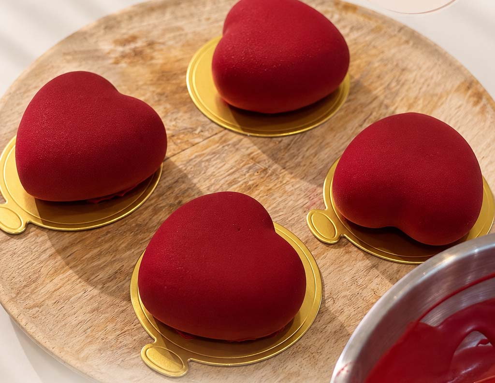
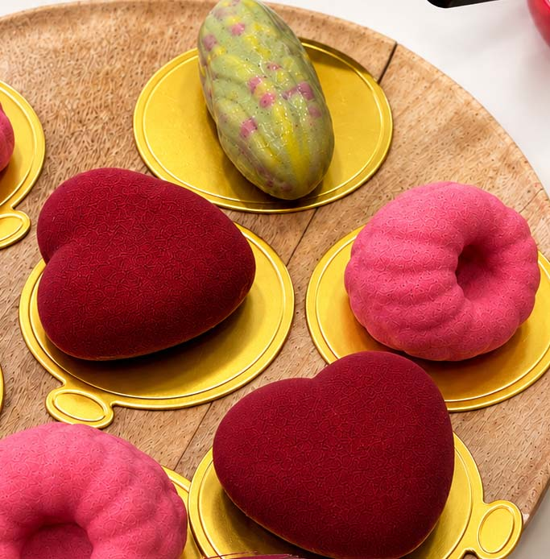
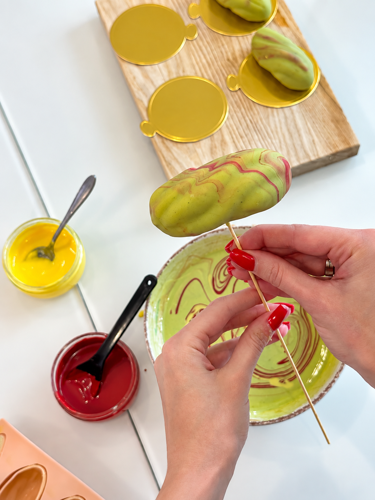
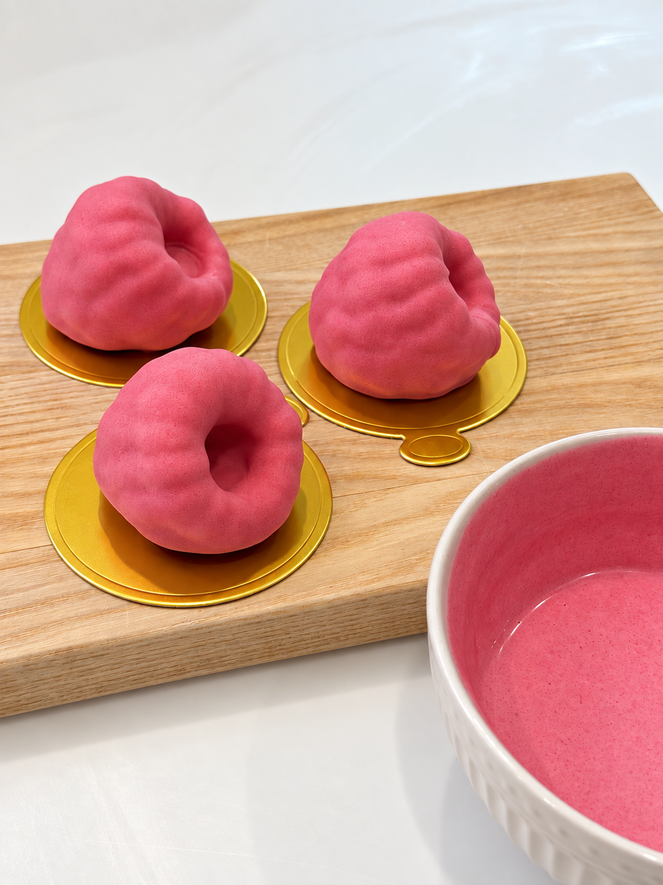
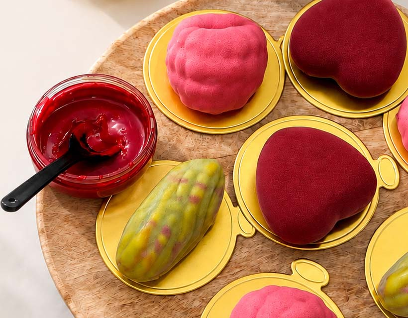

01
Сердечко
Романтичний десерт у формі серця з ніжною сирною начинкою в поєднанні з полуничним конфітюром - гарний подарунок, який можна створити власноруч.
Сердечко, фісташка та малина - крок за кроком пройдіть шлях від підготовки інгредієнтів до ніжної начинки та красивого декору.

У мінікурсі ви крок за кроком приготуєте три оригінальні десерти: від підготовки інгредієнтів до ніжної начинки та красивого декору.

Романтичний десерт у формі серця з ніжною сирною начинкою в поєднанні з полуничним конфітюром - гарний подарунок, який можна створити власноруч.

Вишуканий десерт з фісташковим ганашем, ніжною текстурою та цікавим кольоровим поєднанням - для поціновувачів горіхових смаків.

Яскравий малиновий десерт із виразним ягідним смаком та ніжною начинкою. Гармонійне поєднання солодкості й легкої кислинки.
Розберемо ключові етапи приготування: від вибору шоколаду та підготовки форм до наповнення і фінального покриття десертів.
Дізнаєтесь, з чого складається корпусний десерт, та які основні три етапи приготування допоможуть отримати бажаний результат.
Який шоколад та інші інгредієнти знадобляться, на що звертати увагу під час вибору та як підготувати все до роботи.
Навчитеся працювати з шоколадом і рівномірно формувати десерт без пошкоджень.
Покроково приготуєте десерт у формі сердечка: створення кремової основи, ягідної начинки та завершення оформлення.
Освоїте приготування десерту у формі фісташки та дізнаєтесь, як надати йому охайного й апетитного вигляду.
Створите ягідний десерт у формі малини, попрацюєте над деталями та фінальним декором.

Мінікурс підійде тим, хто лише знайомиться з корпусними десертами, і кондитерам, які хочуть додати до свого асортименту нові цікаві вироби.
Раніше не працювали з корпусними десертами? Почнете з базових етапів і послідовно пройдете весь процес разом із відеоуроками.
Уже готуєте солодощі вдома? Розширте свої навички та здивуйте близьких незвичайними десертами з ефектною подачею.
Хочете спробувати себе в новій кондитерській техніці? Навчіться створювати десерти, які приємно готувати, дарувати та подавати до столу.
Навчайтеся у власному темпі: переглядайте відео, повторюйте кожен етап на своїй кухні та повертайтеся до уроків, коли це потрібно.
Відеоуроки допоможуть розібратися з деталями та нюансами приготування й повторити процес у зручний для вас час.
Послідовно розглянете основні кроки приготування кожного десерту - від підготовки до готового результату.
Усі уроки доступні онлайн: навчайтеся з телефона, планшета або комп’ютера тоді, коли вам зручно.
Матеріал подано зрозуміло й послідовно, щоб ви могли зосередитися на практиці та впевнено повторювати побачене.
Зробіть навчання ще цікавішим - отримайте додатковий матеріал у подарунок. Оплатіть мінікурс та отримайте бонус.
Отримайте відеоуроки, покроковий процес і можливість навчатися у власному темпі з телефона, планшета або комп’ютера.
Коротко про формат і доступ до навчання.
Так. Мінікурс підійде тим, хто лише знайомиться з корпусними десертами. Матеріал подано послідовно - від базових етапів до готових десертів.
Ви отримуєте відеоуроки в Telegram-боті та можете переглядати їх у зручний для себе час.
Усі уроки доступні онлайн: навчайтеся з телефона, планшета або комп’ютера.
Так, ви можете повертатися до матеріалів і повторювати потрібні етапи під час приготування.
Три корпусні десерти: сердечко з сирною начинкою та полуничним конфітюром, фісташку з фісташковим ганашем і малину з ягідною начинкою.